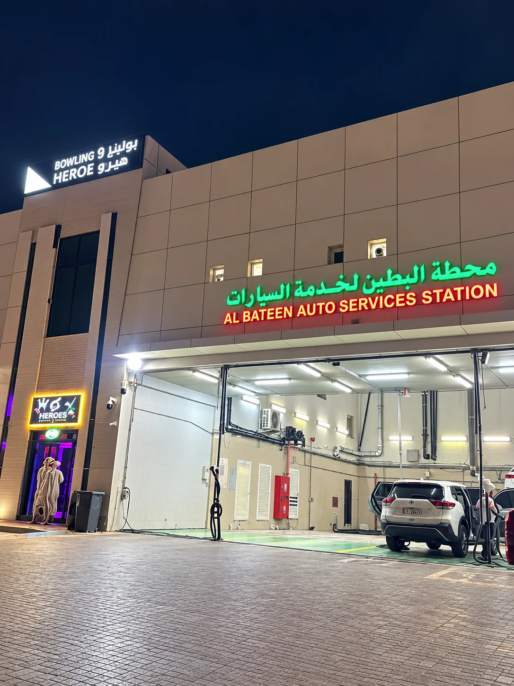
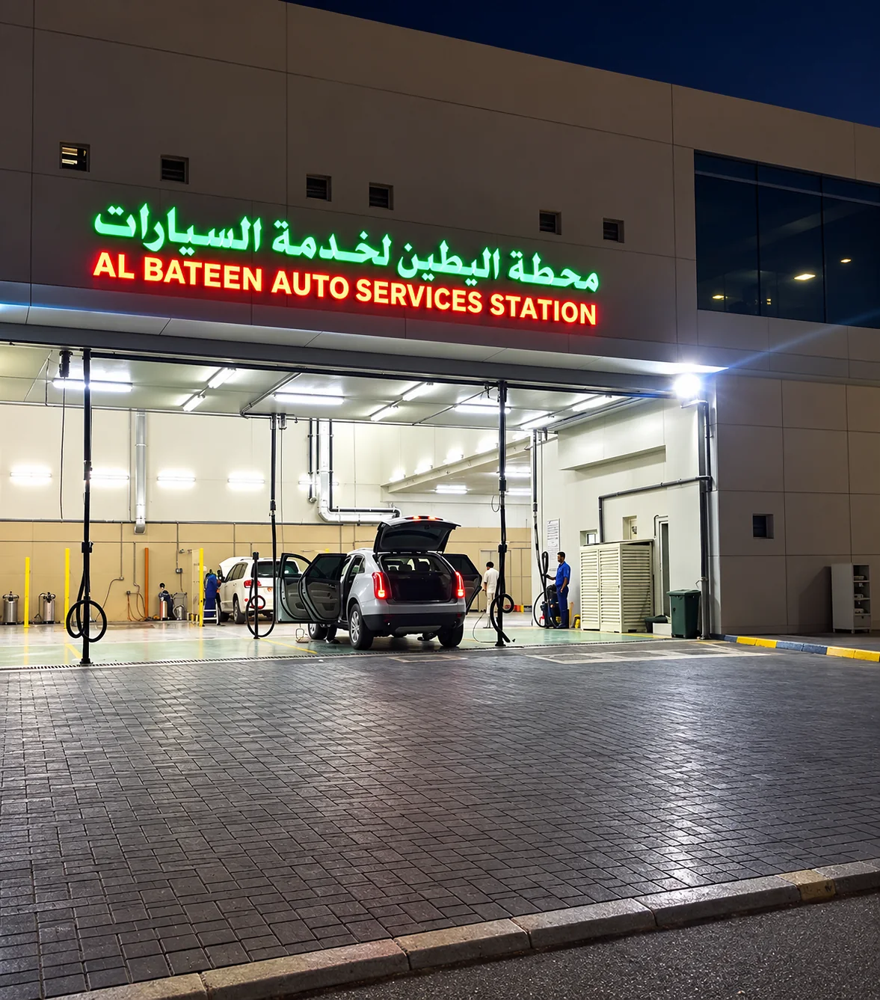

زورونا في العين
محطة البطين لخدمات السيارات — غسيل سيارات وخدمات سيارات في مكان واحد.
معلومات التواصل
كل ما تحتاجه قبل زيارتك.
الهاتف
050 137 5455
واتساب
050 137 5455
ساعات العمل
يومياً
9:00 ص – 11:00 م
الموقع
العين، أبوظبي
الإمارات العربية المتحدة

الموقع
محطة البطين — العين
العين، أبوظبي، الإمارات العربية المتحدة.
افتح الموقع على خرائط Google العين، أبوظبي الاتجاهات إلى المحطة